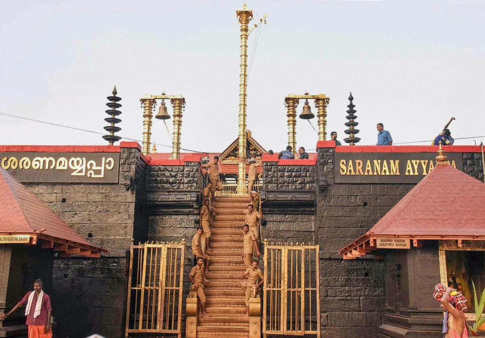

Pathanamthitta is a combination of two words – Pathanam and Thitta – which mean an array of houses on the river side. It is presumed that the regions presently under the District were formerly under the Pandalam reign which had connections with the Pandya Kingdom.
Pathanamthitta District, the thirteenth revenue district of the State of Kerala, nestles its head on the slopes of the Western Ghats and stretches to the low-lying rice fields bordering Alappuzha District. It was formed with effect from the 1st November, 1982
Situated near the Western Ghats and bordered by the hills, Pathanamthitta district is a treat to eyes with its vast unending stretches of forests, rivers and rural landscapes. Blessed by nature, the district is famous for its scenic beauty, fairs and festivals.
Pathanamthitta District Population of Rural and Urban.Out of total population of Pathanamthitta, 1,329,128 in the district, 131,613 are in urban area and 1,065,799 are in rural area.
Must visit places in Pathanamthitta

Perunthenaruvi Waterfalls (Malayalam: പെരുന്തേനരുവി) are waterfalls 36 km (22 mi) from Pathanamthitta in Pathanamthitta District, Central Travancore region, Kerala State, India. It is a popular tourist destination situated in Vechoochira Panchayat of Ranni taluk. The one shore of this waterfall is Kudamurutty and Vechoochira is the other. The main route to this waterfall starts from Ranni - Athikkayam - Kudamurutty - Perunthenaruvi. It is a fine place to spend time with family in a very serene atmosphere.
Read More
The Sabarimala Temple (Malayalam pronunciation: [ʃabəɾimala]; Malayalam: ശബരിമല ക്ഷേത്രം) is a temple complex located at Sabarimala hill inside the Periyar Tiger Reserve in the Perinad Village, Pathanamthitta district, Kerala, India. It is one of the largest annual pilgrimage sites in the world with an estimate of over 40 to 50 million devotees visiting every year.[3][4][5][6] The temple is dedicated to a Hindu Brahmachari (Celibate) deity Ayyappan also known as Dharma Shasta, who according to belief is the son of Shiva and Mohini, the feminine incarnation of Vishnu.[7] The traditions of Sabarimala are a confluence of Shaivism, Vaishnavism, and other Śramaṇa traditions.
Read More
Pandalam Bridge, popularly known as Kurunthottayam Bridge, is a concrete bridge constructed at Pandalam junction in Kerala, India.[2] Kerala Public Works Department commissioned the bridge and opened for public at December 2016. The cost of the bridge is 4.20 crore INR.The bridge is 19.35-metre long and 14.6-metre wide and has a 1.5-metre wide pedestrian pathway on either side.
Read More
St. George Orthodox Church, Chandanapally or Chandanapally Valiyapalli is one of the biggest churches in South India, located at a village named Chandanapally, Pathanamthitta District in Kerala state of India.
Read More